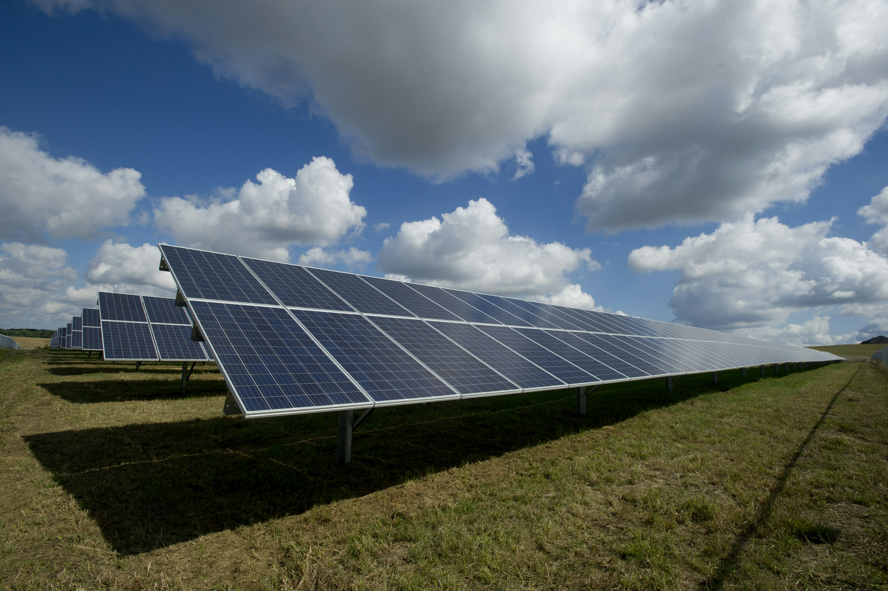
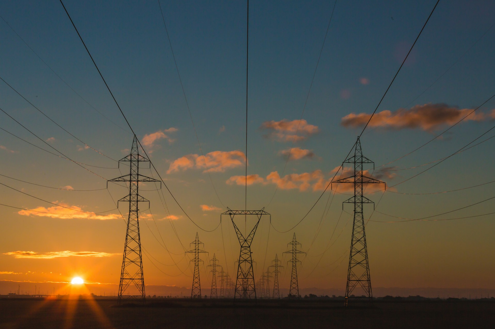
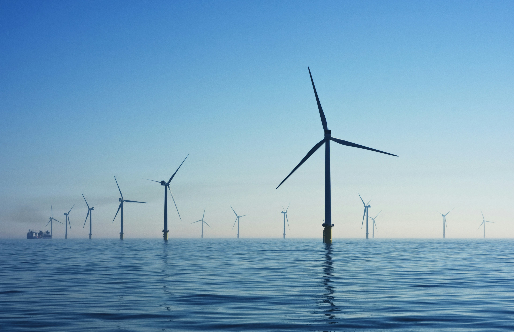

AI-powered satellite intelligence for smarter, cleaner, and more reliable energy systems.
BioSky is a spacetech company using AI and satellite imagery to power energy resilience and decision-making in the energy sector. We build a unified intelligence layer combining satellite data, AI models, and grid analytics to improve reliability, forecasting, and climate resilience.
To build India's first space-powered energy intelligence stack for clean, reliable, and equitable power.
To create a global spacetech leader delivering transformative solutions across industries.
Sub-hourly solar energy forecasting powered by satellite imagery and AI.
Sub-hourly solar and wind generation forecasting using satellite imagery, weather data, and deep learning models for grid-ready accuracy.
Multi-sensor satellite imagery analysis combining optical and radar data for comprehensive environmental and infrastructure monitoring.
Satellite-powered climate risk analysis and weather intelligence for energy infrastructure adaptation and long-term resilience planning.
Real-time grid health monitoring, congestion prediction, and demand-supply balancing integrated with satellite-derived environmental insights.
Unified dashboard and API layer delivering real-time energy insights, automated alerts, and AI-driven recommendations for operators and stakeholders.
Climate volatility, aging infrastructure, and rising renewable penetration are creating unprecedented challenges for energy grids worldwide. Traditional forecasting tools weren't designed for this level of complexity.
Real-time wind generation forecasting with satellite-driven atmospheric modeling.
A unified intelligence layer combining satellite data, AI models, and grid analytics to power every layer of the energy value chain.
Real-time decision support, alerts, and automated actions
Deep learning forecasting, anomaly detection, and pattern recognition
Satellite imagery, weather APIs, grid telemetry, and historical datasets
Optical, radar, and thermal imagery from 12+ satellite constellations
15-minute resolution predictions with 95%+ accuracy benchmarks
Direct API integration with SCADA, EMS, and scheduling systems
Proven results powering generation, transmission, and distribution operations.
Revenue improvement from better generation planning
Improved risk profile for lender due-diligence
Downtime reduction through predictive maintenance
Lower planned outage costs through predictive scheduling
Reduction in unplanned grid congestion events
Reduced asset failure rate through satellite monitoring
Improved demand forecast accuracy for utilities
Reduction in feeder-level technical losses
Lower theft/bill-level losses from anomaly detection
Monitoring the planet's energy infrastructure with multi-sensor satellite imagery.
Featured case studies showcasing our technology in action across the energy sector.

How BioSky's satellite-powered forecasting engine reduced solar curtailment by 28% and improved grid scheduling accuracy for a 200 MW solar installation in Rajasthan.
Read More
Leveraging multi-sensor satellite data and AI to predict transmission congestion 48 hours in advance.
Read More
Achieving 15-minute resolution wind ramp forecasts with satellite-derived atmospheric boundary data.
Read MoreJoin India's leading energy companies using space-powered intelligence for smarter grid decisions, better forecasting, and climate resilience.